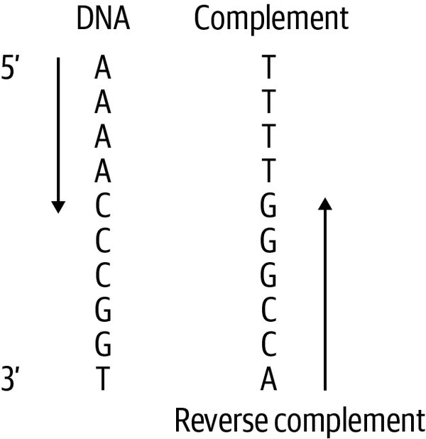

4 Training tricks
4.1 Reverse Complements and Sequence Shifts
Reverse Complements
As explained in Part 1, DNA has a double helix structure. When we one-hot encode a segment of DNA in our models using a reference genome, we typically represent only one strand of the double helix. The complement of this strand is the opposite strand, where Adenine (A) pairs with Thymine (T), and Cytosine (C) pairs with Guanine (G). The reverse complement of a DNA strand is obtained by first taking its complement and then reading it in the reverse direction.

This figure shows the reverse complement of a DNA sequence29
Training on DNA sequences and augmenting the data with their reverse complements has been shown to improve model accuracy, prediction, and interpretability in DNA sequence-related models. This approach involves “treating the reverse complement DNA sequence as another sample”30. By incorporating reverse complements, the model is exposed to a wider variety of sequence patterns, which helps reduce overfitting and enhances generalization. As a result, models become better at recognizing patterns regardless of strand orientation. Although the logic to obtain the reverse complement of a DNA strand is straightforward, the Bio.Seq module from the Biopython library provides a simple way to do this. Augmenting your dataset with reverse complements is usually done to training sets, but can be applied to validation and test sets as well.
from Bio.Seq import Seq
# Example DNA sequence
dna_sequence = Seq("ATGCGTAC")
# Generate the reverse complement
reverse_complement = dna_sequence.reverse_complement()
print("Original Sequence: ", dna_sequence)## Original Sequence: ATGCGTAC## Reverse Complement: GTACGCATSequence Shifts
Training on small, random sequence shifts up and downstream by shifting the genomic coordinates of the input sequence is also known as jitter. Jittering adds diversity to the training data by creating slightly different versions of the same sequence. This allows models to be less sensitive to the exact positioning of features, making them more robust to variations in the data. It also allows models to generalise better to unseen data where sites may not always be perfectly aligned. A variation of jittering, called flanking “extends DNA sequences from its midpoint by X base pairs and takes the left, middle and right input windows of the extended sequence as training samples with the same labels, tripling the size of training set.31
Implementing data augmentations using reverse complements and sequence shifts can be approached in different ways. Similar to the ‘flanking’ example, you can either expand your dataset by adding additional augmented data points or apply a random augmentation strategy, where only some data points are randomly augmented while keeping the total number of points in your dataset unchanged. Data augmentations are usually applied only to training sets, however in the context of computer vision “many research reports have shown the effectiveness of augmenting data at test-time as well”.32 When implementing augmentations like reverse complements and sequence shifts, these are typically applied after splitting your data into training, validation, and test sets. When applying sequence shifting, it’s logical to shift the interval before retrieving the nucleotide sequence from the reference genome. The reverse complement should be applied after retrieving the nucleotide sequence but before one-hot encoding it. If you’re using the BioPython library, this works well since BioPython’s reverse complement function operates on string inputs.
In the genomics context, a paper on evaluating deep learning for predicting epigenomic profiles used two convolutional neural networks, Basenji and BPNet, trained on ATAC-seq data, to predict coverage values as a regression. They found that convolutional models trained with augmentations (reverse complement and sequence shifts), “yielded improved robustness, especially when trained on peak-centered data (BPNet). On the other hand, models that were trained on coverage-threshold data (Basenji) already benefited from the randomly-centered profiles.”33 Additionally, while they initially “used a MSE and multinomial NLL loss for BPNet, [they] found that optimization using Poisson NLL yielded better performance.”34 This finding is another motivation of using at poisson loss function in subsequent tutorials.
4.2 Hyper-parameter optimisation
Which learning rates are commonly used? How many epochs are typically used to train on?
While the learning rate and number of epochs differ by model and study, based on some of the research cited so far, common learning rates are in the range 1e-435 to 1e-336. Additionally, some studies apply learning rate decay if the loss function shows no improvement over time37 while others lower the learning rate for fine tuning.38
The number of epochs used to train on differs by quite a margin. In training a convolution neural network to explore the effects of genomic data augmentation, 30 epochs were used.39 DeepImpute which constructs multiple sub-neural networks for genotype imputation, trains on a maximum of 500 epochs, while the study involving the Basenji and BPNet models were trained on a maximum of 100 epochs. The clear strategy for these larger models involve the use of early stopping if no improvements are evident after 5-10 epochs.
When hyperparameter optimising, the consensus for achieving the best model performance is to train with a high number of epochs to enable the model to confidently learn features as they apply to labels, starting with a high learning rate, and decreasing over time using a learning rate scheduler. Interestingly, a study on binary peak detection using CNNs on ChIP-Seq data manually tuned their model’s hyperparameters and found that little changes in performance results40. This highlights the challenges of hyperparameter tuning with larger models, where manually fine-tuning is not ideal. How can hyperparameter tuning on these larger models be done in practice?
Raytune
Raytune “is a Python library for experiment execution and hyperparameter tuning at any scale”. It aids in leveraging state of the art hyperparameter optimisation algorithms while simplifying scaling for larger models. Raytune hyperparameter searching can also be scaled to cloud based clusters without the need for large changes in code structure. Additionally, it supports several machine learning frameworks such as pyTorch and TensorFlow41. One of the strongest current hyperparameter optimisation algorithms is the Asynchronous Successive Halving Algorithm or ASHA. Asha “exploits parallelism and aggressive early-stopping to tackle large-scale hyperparameter optimization problems”42, allowing for faster optimisation and applicability to the larger models common in genomics. A study on predicting the impact of sequence motifs on gene regulation utilised Raytune and the ASHA algorithm to successfully optimise their model’s hyperparameters43.
In the genomic context, as a result of complex models using large genomic datasets, hyperparameter tuning using a brute force approach is untenable. Utilising existing libraries such as Raytune and incorporating asynchronous algorithms such as ASHA, has the potential to pave the way forward in improving model performance without unreasonable computational costs.